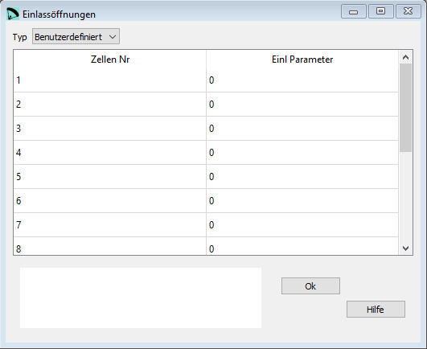

Einlassöffnungen¶
Hier kann die Form der Einlassöffnungen definiert werden. Zusätzlich besteht die Möglickeit zu definieren ob und zu welchem Panel die Verschlussstücke verbunden werden.
Für die Verschlussstücke wird der Nähsaum automatisch berechnet wo notwendig.
Die Segelspannung folgt automatisch den Parametern definiert Tuchspannung.
{kind=link}
Rohdaten:
*******************************************************
* 26. GLUE VENTS
*******************************************************
1
1 -6 70 100
2 -4 0 80
3 -4 80 0
4 -4 0 80
5 -4 80 0
6 -4 0 100
7 -4 100 50
8 -4 50 0
9 4 100 0
10 5 0. 0. 80.
11 5 0. 0. 80.
12 -5 50. 50. 50.
13 -5 50. 100. 50.
14 -6 70. 70.
15 -1
Typ¶
Einlassöffnungen ist eine optionale Konfiguration.
Wenn die Standard Parameter verwendet werden sollen dann setze Typ auf Standard.
Wenn Typ auf Benutzerdefiniert gesetzt wird, dann generiert lepg automatisch die notwendigen Konfigurationszeilen basierend auf den Einstellungen für Anzahl Zellen und Rippen aus dem Fenster Basisdaten.
Zellen Nr¶
Nummer der Zelle für welche die Konfiguratioszeile gilt.
Einl Parameter¶


0 Verschlussstück ist nicht verbunden (offene Zelle, oder wenn spezielle Einlassöffnungen z.B. mit einem CAD kreiert werden sollen).
1 Verschlussstück ist Teil des Obersegels (Typisch bei Single Skin Flügeln).
-1 Verschlussstück ist Teil des Untersegels (normalerweise bei geschl Zellen).
-2 Diagonale Öffnung, links 100% offen, das Verschlussstück ist Teil des Untersegels.
-3 Diagonale Öffnung, rechts 100% offen, das Verschlussstück ist Teil des Untersegels.
4 Digonale Öffnung. Mit zwei zusätzlichen Parametern wird jeweils die Öffnung an linken und rechten Rand der Zelle definiert. Das Verschlussstück ist Teil des Obersegels.
-4 Digonale Öffnung. Mit zwei zusätzlichen Parametern wird jeweils die Öffnung an linken und rechten Rand der Zelle definiert. Das Verschlussstück ist Teil des Untersegels
5 Gebogene Öffnungskante. Mit drei zusätzlichen Parametern wird jeweils die Öffnung an linken und rechten Rand der Zelle, sowie die Krümung definiert. Das Verschlussstück ist Teil des Obersegels.
-5 Gebogene Öffnungskante. Mit drei zusätzlichen Parametern wird jeweils die Öffnung an linken und rechten Rand der Zelle, sowie die Krümung definiert. Das Verschlussstück ist Teil des Untersegels.
6 Elliptische Öffnung. Mit zwei zusätzlichen Parametern wird der Grad der Öffnung in Breite und Höhe des Verschlussstückes definiert. Das Verschlussstück ist Teil des Obersegels.
-6 Elliptische Öffnung. Mit zwei zusätzlichen Parametern wird der Grad der Öffnung in Breite und Höhe des Verschlussstückes definiert. Das Verschlussstück ist Teil des Untersegels.
Eine detaillierte Beschreibung in englisch findest Du auf der Laboratori d'envol website.